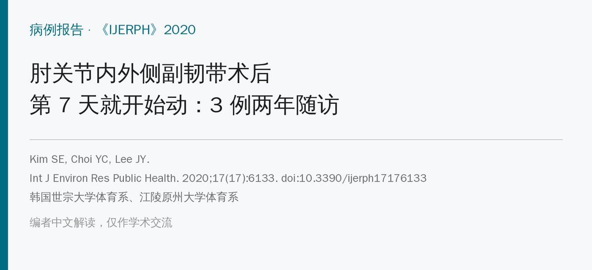
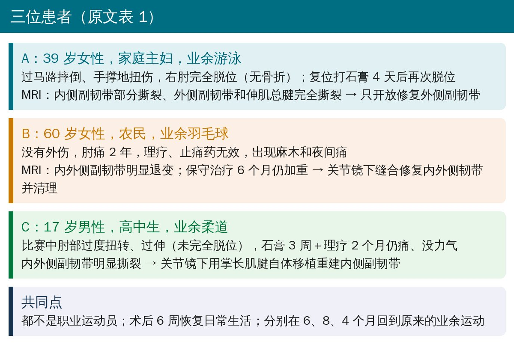
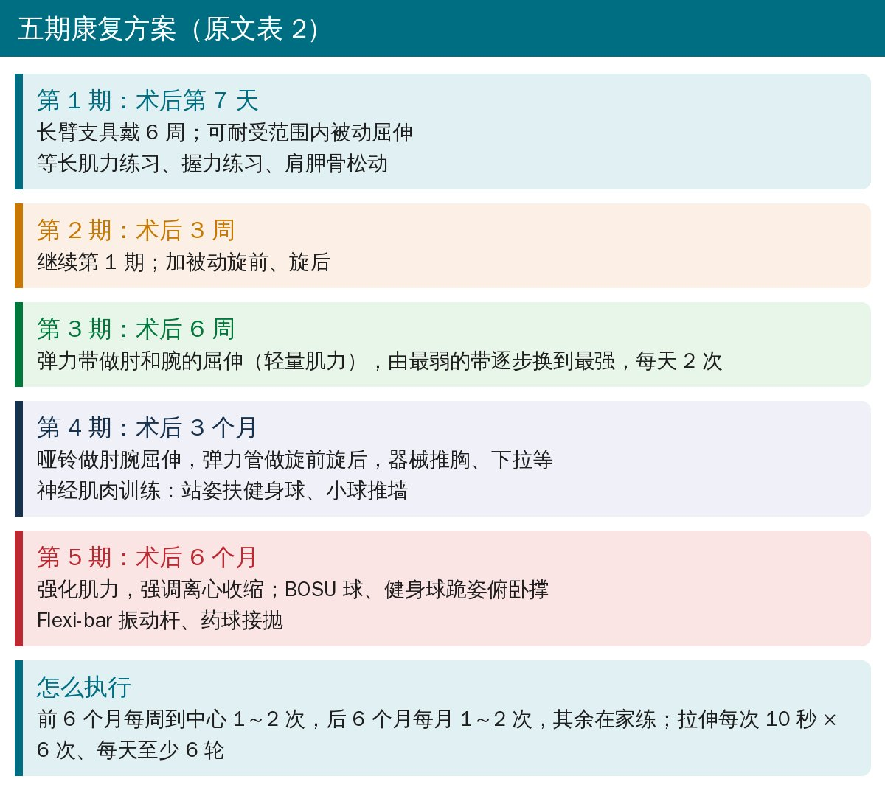
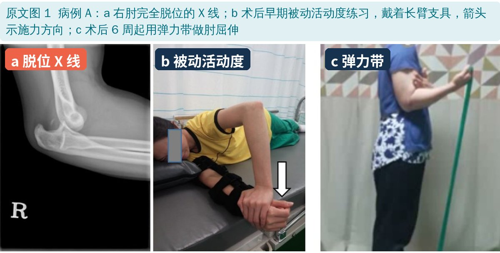
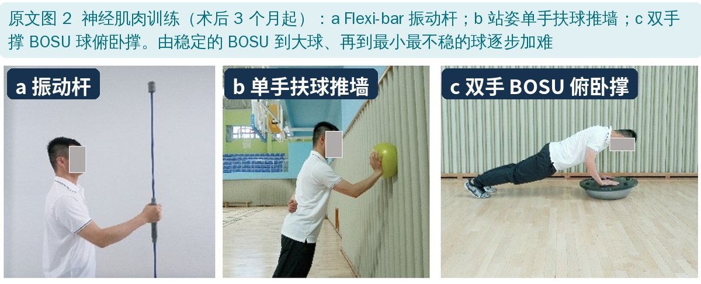
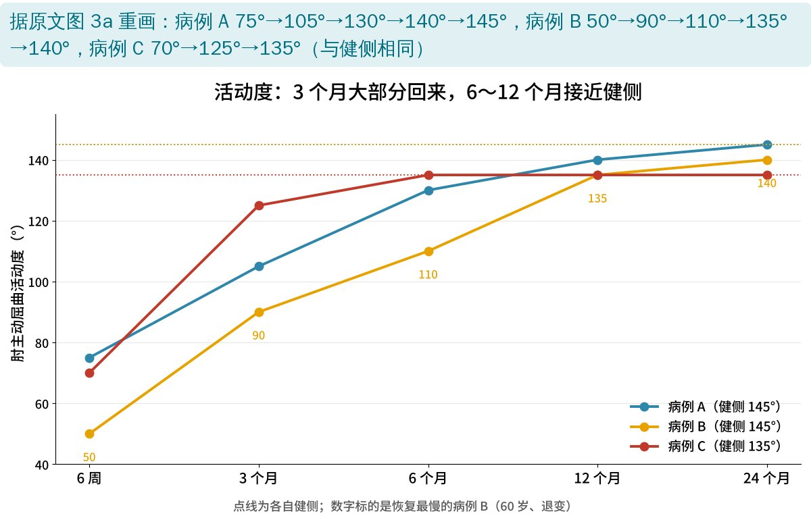
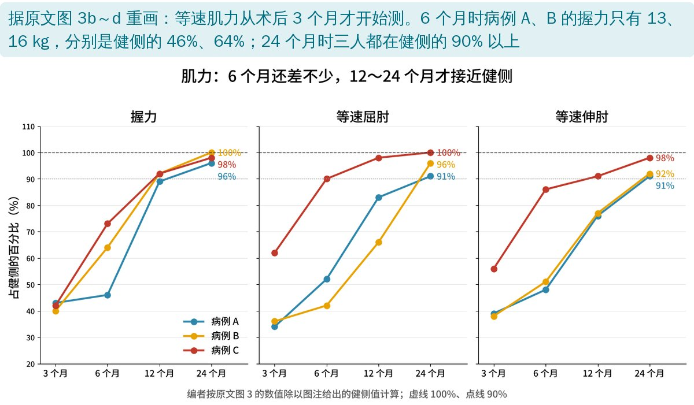
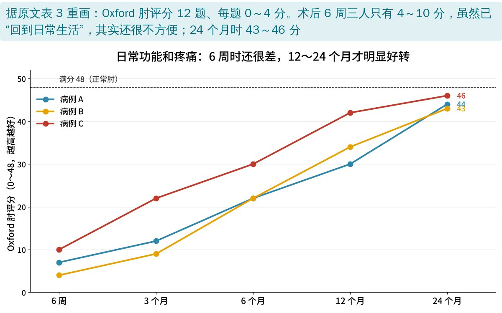
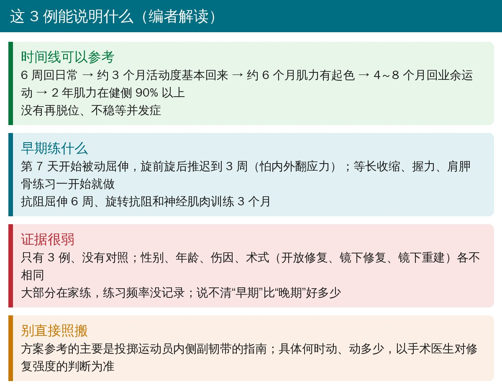

🔖原文信息（编者中文重排）
📚 文献信息
▪ Kim SE, Choi YC, Lee JY. Early Rehabilitation after Surgical Repair of Medial and Lateral Collateral Elbow Ligaments: A Report of Three Cases. Int J Environ Res Public Health. 2020;17(17):6133. doi:10.3390/ijerph17176133
▪ 作者单位：韩国世宗大学体育系、江陵原州大学体育系
▪ 文章类型：病例报告（3 例，随访 2 年）
• 3 位肘关节内侧＋外侧副韧带同时受伤的非职业运动员，术后第 7 天开始被动活动，第 6 周加弹力带抗阻，第 3 个月加神经肌肉训练
• 大致时间线：6 周回日常生活 → 约 3 个月活动度基本回来 → 约 6 个月肌力明显提高 → 4～8 个月回到业余运动
• 2 年随访：X 线正常、没有不稳，肌力都在健侧的 90% 以上；全程没有出现并发症
• 但只有 3 例、没有对照，只能说明“这样练没出事”，不能证明早练比晚练好
肘关节韧带损伤里，研究最多的是投掷运动员的内侧副韧带（尺侧副韧带）损伤，康复方案也大多为他们设计。而外侧副韧带单独损伤、或内外侧一起伤，多由跌倒脱位等外伤引起，发生得少，相关康复报告也少。
作者想看看：对这类复合损伤，术后早一点开始动是否安全、能否顺利恢复活动度和肌力。

🔖三位患者（据原文表 1 整理）

🔖五期康复方案（据原文表 2 整理）
几个时间点的考虑：皮肤缝合约 2～3 周愈合，肌腱和肌肉缝合处约 6 周才能稳定承受张力。所以屈伸抗阻放在 6 周；而旋前旋后会给韧带带来内外翻应力，复合损伤更怕这个，所以被动旋转推迟到 3 周、旋转抗阻推迟到 3 个月。

🔖原文图 1：病例 A 的 X 线、被动活动和弹力带练习
神经肌肉训练从 3 个月开始，先站着推墙、再跪姿，难度从稳定的 BOSU 到大球、再到最小最不稳的球。作者说，考虑到患者不是职业运动员，为安全起见以站姿为主。

🔖原文图 2：神经肌肉训练
测量方法：量角器测活动度；等速肌力仪（30°/s，仰卧）测屈伸肌力，为安全起见术后 3 个月才开始测；握力计测握力；Oxford 肘评分（OES）评估日常功能和疼痛。

🔖活动度变化（据原文图 3a 重画）

🔖肌力占健侧的百分比（据原文图 3b～d 计算重画）

🔖Oxford 肘评分变化（据原文表 3 重画）
值得注意的是，3 人在术后 6 周都“回到了日常生活”，但这时 OES 只有 4～10 分（满分 48）——作者引用的数据是，40～50 岁无症状人群的最低分也有 12～16 分。也就是说，能自理不等于不受影响。年轻男性（病例 C）各项恢复都明显更快，两位女性慢一些，作者认为也可能和受伤前的肌力、练习参与度有关。

🔖编者解读
• 病例报告：3 人的年龄、性别、伤因（脱位、退变、过伸扭伤）和术式（开放修复、镜下修复、镜下重建）都不一样，没法互相比较
• 大部分练习在家完成，作者没有记录练习频率，也说不清哪部分起了作用
• 优点：方案写得具体，有 2 年随访，内外侧复合损伤这类报告本来就少
• 讨论说 2 年时活动度“约有 10% 的差距”，结论又说“完全恢复”；按图 3 数据，只有病例 B 差 5°（140° vs 145°）
• 讨论说约 6 个月握力达到日常所需（女性 18 kg），但图 3 中病例 A、B 6 个月时只有 13、16 kg，到 12 个月才达到
• 标题写“修复”，但病例 C 实际是用掌长肌腱重建内侧副韧带，病例 A 只修了外侧
• 内外侧副韧带术后，若手术医生认可修复牢靠，可参考这条时间线：7 天被动屈伸 → 3 周被动旋转 → 6 周屈伸抗阻 → 3 个月旋转抗阻和神经肌肉训练 → 6 个月离心和抛接
• 等长收缩、握力练习和肩胛骨练习从一开始就能做，不影响术区
• 复合损伤要格外小心内外翻应力，旋前旋后比屈伸晚加
• 跟患者说清预期：6 周能自理但还很不方便，回业余运动大约要 4～8 个月，肌力接近健侧可能要 1～2 年
欢迎关注骨科康复小黄公众号，获取更多物理治疗的专业知识！
📄参考文献：
Kim SE, Choi YC, Lee JY. Early Rehabilitation after Surgical Repair of Medial and Lateral Collateral Elbow Ligaments: A Report of Three Cases. Int J Environ Res Public Health. 2020;17(17):6133. doi:10.3390/ijerph17176133
原文以知识共享署名 4.0（CC BY 4.0）协议开放获取。原文图 1、2 引自原文，图中中文标签为编者所加；结果图由编者根据原文图 3 和表 3 的数据重画；整理卡为编者根据原文撰写。